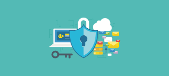
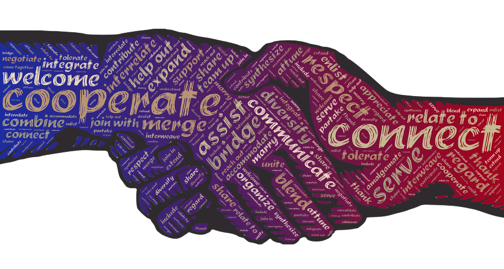

There are a number of ways to protect yourself on the internet.
Some examples on how are...
Microsoft, Mac and most Linux operating Systems all offer free security updates for there software. These updates fix potential ways for hackers to get in, fixes glitches and improves the effectiveness of the built in security system.

Third party security can be a great alternative to Windows security centre, mainly being necessary for someone using potentially secretive or highly important infomation that cannot be stolen.

Before you open up a link, or even open a spam email, remember that it could contain potential malware and or viruses. These things could cause have an impact on your PC or Mac and result in you data being held "hostage" or being stolen.

Sometimes it isn't always a hacker or someone good at using computers that can pose a risk to you and other members of your family. You may accidently take a photo of your personal infomation, such as your passwords and home adressess, while takeing a photo of something else.
If something in general isn't right, its ok to ask for some help from a professional or someone more experienced.They maybe able to help you fix the issue, or help you find someone who can.
